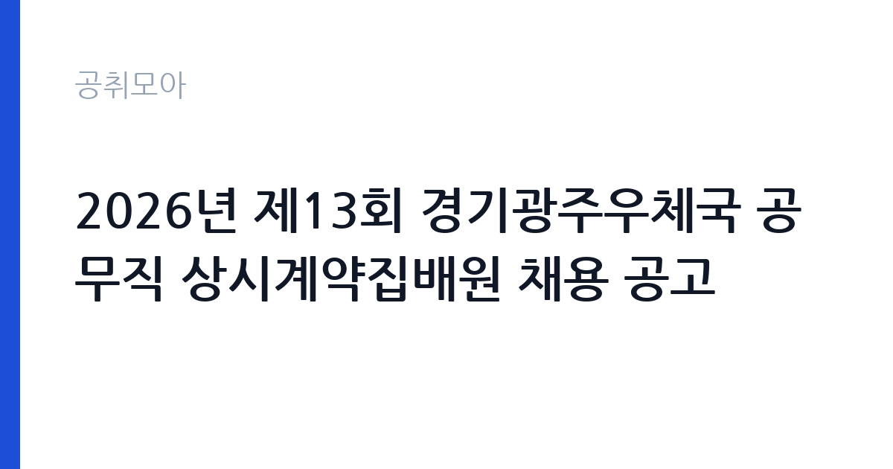

[국가기관] 2026년 제13회 경기광주우체국 공무직 상시계약집배원 채용 공고
과학기술정보통신부 우정사업본부 경인지방우정청 경기광주우체국 · 경기 · 마감 2026-10-06 (D-8) · 출처 나라일터

한눈에 보는 모집 조건
| 기관 | 과학기술정보통신부 우정사업본부 경인지방우정청 경기광주우체국 |
|---|---|
| 공고명 | 2026년 제13회 경기광주우체국 공무직 상시계약집배원 채용 공고 |
| 고용형태 | 공무직 |
| 근무지 | 경기 |
| 게시일 | 2026-09-28 |
| 마감일 | 2026-10-06 (D-8) |
지원자격, 이렇게 읽으세요
- 공무직상시계약집배원 1명
- 접수 ~2026-10-06 마감
- 세부 조건은 원문 공고문 확인
공고문의 응시자격은 짧게 쓰여 있지만 실제로는 세 가지를 봅니다. 첫째 결격사유 해당 여부, 둘째 자격·경력의 직무 연관성, 셋째 근무 시작 가능일입니다. 셋 중 하나라도 애매하면 원문 공고문의 세부 조항을 먼저 확인하고 지원서를 쓰세요. 특히 과학기술정보통신부 우정사업본부 경인지방우정청 경기광주우체국 공고는 공무직 전형이라 서류에서 직무 연관 키워드(국가기관)를 명시하는 게 유리합니다.
이 공고의 포인트
이 공고의 관전 포인트는 ''입니다. 과학기술정보통신부 우정사업본부 경인지방우정청 경기광주우체국이 내건 조건 가운데 '공무직상시계약집배원 1명' 대목이 서류의 분수령이 됩니다. 해당되면 주저 없이 지원하고, 애매하면 원문 공고문의 세부 조항을 먼저 대조해 보세요. D-8 일정상 오늘 내로 판단하는 게 좋습니다.
전형은 어떻게 진행되나
대부분 서류심사 후 면접심사 순으로 진행됩니다. 서류에서는 지원서·자기소개서의 직무 적합성을 보고, 면접에서는 실무 이해도와 근무 지속 가능성을 봅니다. 마감일(2026-10-06) 직전에는 접속이 몰려 원서 접수가 막히는 경우가 있으니 최소 하루 전 제출을 권합니다. 제출 후에는 접수번호·수험표 출력 여부를 반드시 확인하세요.
원문에서 확인한 전형 방식
2026년도 제13회 경기광주우체국 공무직 상시계약집배원 선발 계획을 다음과 같이 공고합니다. 2026년 09월 28일 -경기광주우체국장- 1. 채용직종 - (제13회) 공무직상시계약집배원 1명 2. 채용절차 : 1차 서류전형, 2차 실기시험(체력검정), 3차 면접시험 3. 응시원서 접수기간 : 26.09.30.(수) ~ 26.10.06.(화) 18:00까지 4. 서류전형 합격자 발표 : 26.10.07.(수) 5. 최종심사 : 26.10.08.(목) 6. 최종합격자 발표 : 26.10.14.(수) (예정) * 자세한 사항은 반드시 공고문(첨부파일)을 확인하시기 바랍니다 (담당자 연락처 : 031-799-5112)
위 내용은 과학기술정보통신부 우정사업본부 경인지방우정청 경기광주우체국 원문 공고의 전형 항목을 그대로 옮긴 것입니다. 단계별 배수와 평가 요소가 적혀 있으니 본인 강점과 맞는 단계에 맞춰 준비 순서를 정하세요. 전형별 합격자 발표일도 원문에서 함께 확인하는 것이 좋습니다.
이런 분께 추천해요
- 경기 근무가 가능한 분 — 통근·거주 조건이 맞는지가 1순위입니다
- 공무직 전형을 찾는 분 — 국가기관 분야 관심자라면 우선 검토 대상입니다
- 마감(2026-10-06) 안에 서류를 낼 수 있는 분 — D-8이니 오늘 지원서 초안부터 잡으세요
지원 전 체크리스트
- 과학기술정보통신부 우정사업본부 경인지방우정청 경기광주우체국 원문 공고문 저장했는가(공고 변경 대비)
- 지원서 초안과 증빙 파일이 준비됐는가
- 접수 마감일 2026-10-06(D-8)을 달력에 표시했는가
- 경기 출퇴근·거주 조건이 맞는가
모집 일정과 제출 타이밍
게시일은 2026-09-28, 마감은 2026-10-06입니다. 남은 기간은 약 8일입니다. 서류 준비에 7일을 쓰고 마지막 하루는 접수·확인용으로 남겨두세요. 공공 채용은 마감일 24시간 전부터 지원자가 몰려 접수 페이지가 느려지거나 증빙 업로드가 실패하는 일이 잦습니다. 일정 운영의 정석은 이렇습니다. 첫날에는 공고문과 직무기술서를 출력해 응시자격·우대사항에 형광펜을 치고, 중간 기간에는 자기소개서 초안과 증빙 스캔을 끝내고, 마감 전날에는 접수 시스템에 미리 입력까지 마쳐 두는 것입니다. 마감 당일에 처음 접속하는 지원자가 가장 많이 탈락합니다. 접수번호가 발급되고 수험표(또는 접수확인서)가 출력돼야 접수가 끝난 것이니, 제출 후 확인증까지 꼭 챙기세요.
직무 이해하기: 국가기관
국가기관 채용은 법령상 결격사유 심사가 엄격합니다. 병역, 정년, 겸직 금지 조항을 본인 상황에 대입해 먼저 점검하세요. 보안·신원조회가 필요한 직위는 합격 후에도 탈락 사유가 될 수 있어 사전에 결격 여부를 확인하는 것이 시간을 아끼는 길입니다. 과학기술정보통신부 우정사업본부 경인지방우정청 경기광주우체국의 이번 채용(공무직)도 같은 잣대로 보면 됩니다. 공고 제목에 적힌 분야명과 직무기술서의 필요역량을 나란히 놓고, 본인 경험에서 겹치는 키워드를 세 개 이상 뽑아보세요. 그 세 개가 자기소개서와 면접 답변의 뼈대가 됩니다.
자기소개서 작성 팁
자기소개서에서 평가자가 찾는 건 직무와의 연결고리입니다. 서두에 지원 분야(국가기관)를 택한 이유를 한 문장으로 밝히고, 이어서 수치로 증명되는 경험 두 가지를 구체적으로 서술하세요. 마무리는 입사 후 1년의 실행 계획으로 닫습니다. 과학기술정보통신부 우정사업본부 경인지방우정청 경기광주우체국 지원자가 자주 놓치는 감점 포인트는 분야와 동떨어진 성장 배경 나열, 근거 없는 역량 주장, 마감일(2026-10-06) 착오입니다. 공무직 모집은 빠른 실무 적응이 관건이라 출근 가능 시점을 분명히 적는 것이 플러스가 됩니다.
면접 준비 포인트
면접 준비의 핵심은 자소서 방어와 기관 이해입니다. 적은 경험을 조리 있게 설명할 수 있어야 하고, 과학기술정보통신부 우정사업본부 경인지방우정청 경기광주우체국이 무슨 일을 하는 기관인지 한 가지 사업이라도 말할 수 있어야 합니다. 지원 분야(국가기관) 지식과 연결 지으면 점수가 오릅니다. 끝인사에서는 근무지(경기)·공무직 조건을 수용한다는 의사를 분명히 하세요. 일찍 도착해 여유를 갖고, 두괄식으로 답하는 지원자가 좋은 인상을 남깁니다.
급여·근무조건 읽는 법
급여표를 볼 때는 기본급과 실수령액을 구분해야 합니다. 공고문 수치는 대개 기본급이라 수당·상여가 빠진 금액입니다. 공무직 모집에서는 계약 기간과 갱신 조건, 4대 보험·퇴직금 적용이 핵심 체크 항목입니다. 과학기술정보통신부 우정사업본부 경인지방우정청 경기광주우체국 원문의 보수 규정을 펼치고, 근무지(경기)가 외곽이거나 야간·주말 근무가 있다면 주거·교통 지원 조항까지 확인한 뒤 지원서를 내세요.
자주 묻는 질문
- 경쟁률은 어느 정도로 예상되나요?
인기 기관·경기 근무 공고는 서류 경쟁률이 10대 1을 넘는 일이 흔합니다. 다만 '' 같은 조건부 전형은 실질 경쟁률이 낮아지는 경우가 많으니, 본인 조건에 맞는 공고를 고르는 것 자체가 전략입니다. - 합격자 발표는 어디서 확인하나요?
과학기술정보통신부 우정사업본부 경인지방우정청 경기광주우체국 홈페이지 채용 게시판과 지원 시 등록한 문자·이메일로 안내됩니다. 발표일에는 접속이 폭주하니 접수번호를 미리 메모해 두세요. 예비합격자 운영 여부도 원문에서 함께 확인하는 것이 좋습니다. - 불합격하면 다음 기회는 언제인가요?
공공기관은 상·하반기 정기 채용과 수시·추가 모집이 반복됩니다. 이번 마감일(2026-10-06)을 놓쳐도 같은 기관의 다음 회차가 열리니, 공취모아의 국가기관 탭을 구독하듯 수시로 확인하세요.
함께 보면 좋은 공고
[국가기관] 2026년도 제1회 전남대학교 교육혁신본부 계약직원 채용 공고(패키지지원대학사업) — 마감 2026-10-08[국가기관] 법무부 6급 변호사 자격 소지자 경력경쟁 채용시험 공고(출입국, 교정) — 마감 2026-10-08[국가기관] 부산지방국세청 일반임기제공무원(징세분야, 변호사, 6급) 경력경쟁채용 본공고 — 마감 2026-10-13출처: 나라일터 공개정보를 바탕으로 공취모아가 정리한 안내글입니다. 모집 조건·일정은 변경될 수 있으니 지원 전 반드시 원문 공고문을 확인하세요. 본 글은 정보 제공용이며 합격을 보장하지 않습니다.